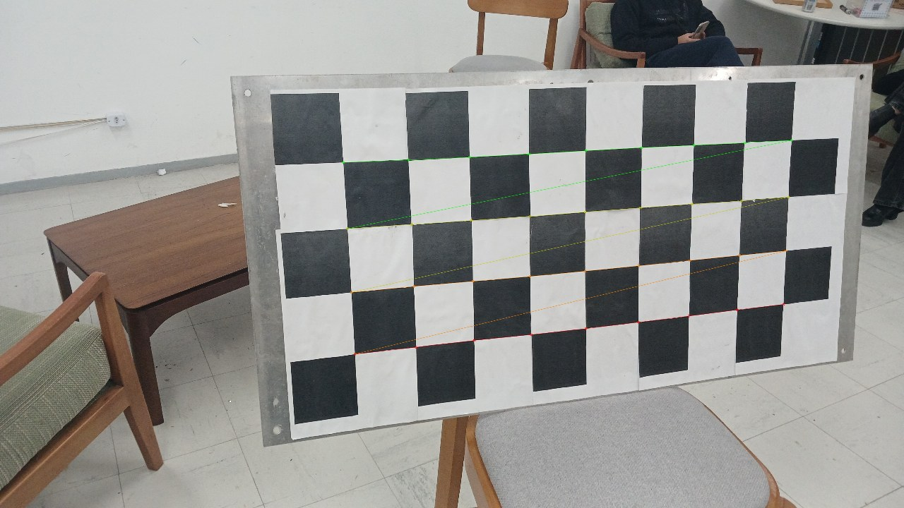
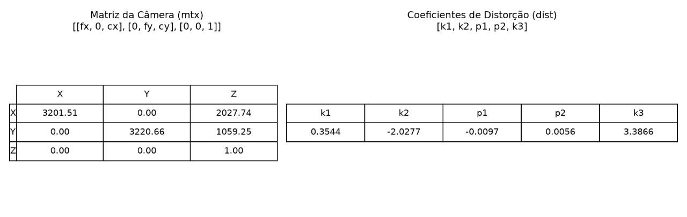
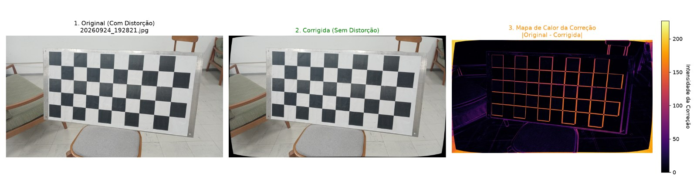
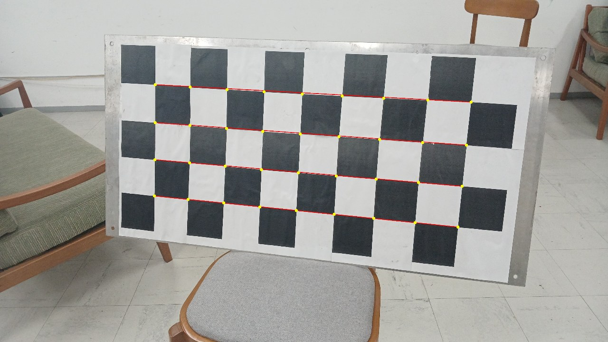
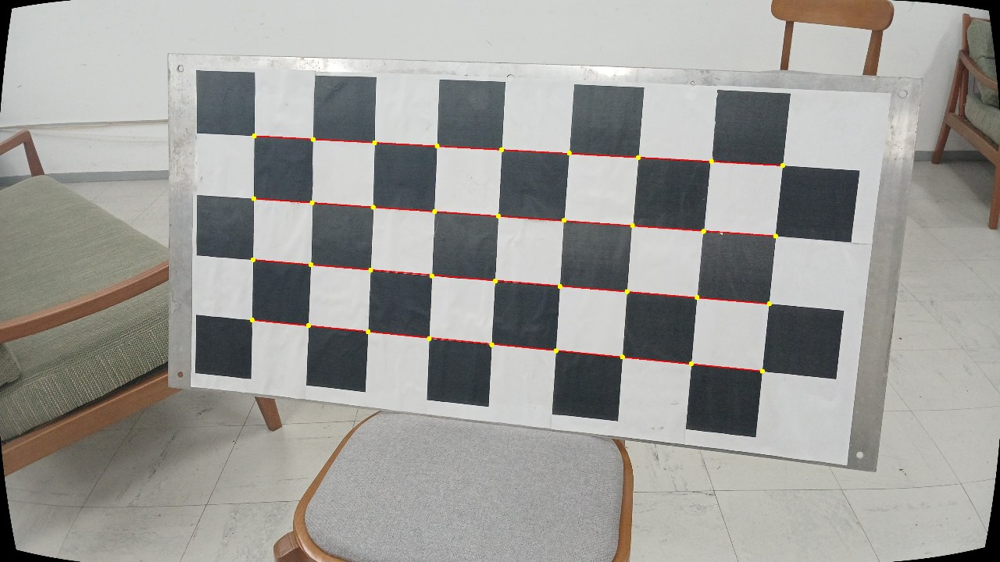
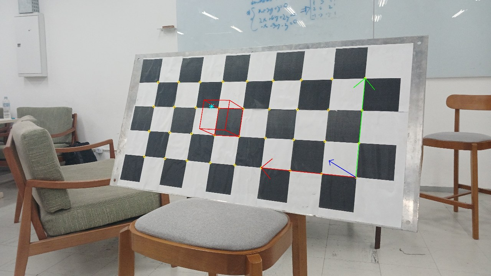
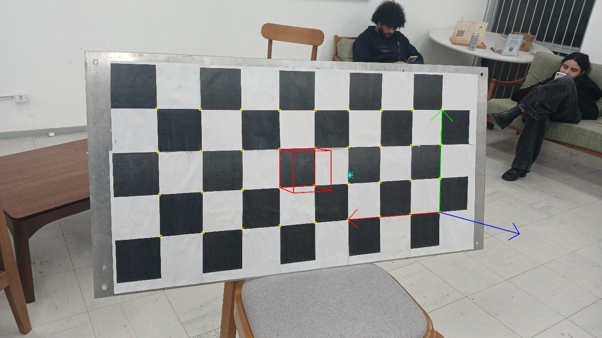
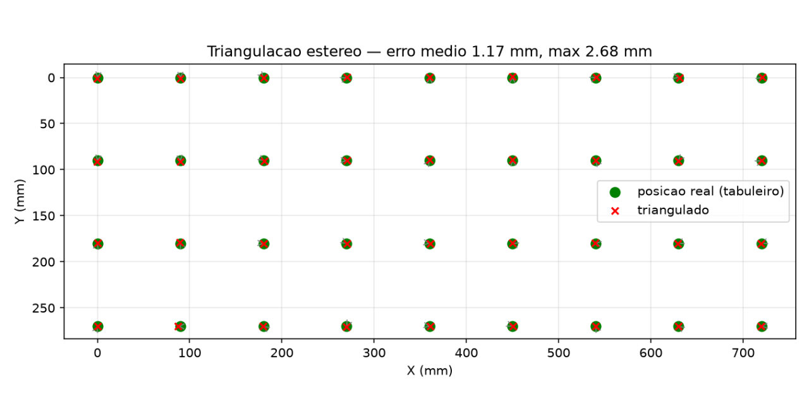

CI1026 - Visão Computacional e Percepção — TA02 código: https://github.com/matiasedd/camera-callibration
A ideia do trabalho é "ensinar" o computador como a nossa câmera enxerga. Uma câmera de verdade não é aquele modelo de furinho perfeito dos slides: a lente entorta as retas perto das bordas e o centro da imagem não é exatamente o centro óptico. Calibrar é descobrir os números que descrevem isso: a matriz K (distâncias focais fx, fy e o ponto principal cx, cy), os coeficientes de distorção e, para cada foto, onde a câmera estava (rotação + translação).
O jeito que usamos é o clássico do Zhang (2000): tira um monte de
foto de um xadrez de tamanho conhecido, cada uma de um ângulo. Em cada
foto dá para casar "esse canto do mundo foi parar nesse pixel", e juntando
tudo o OpenCV resolve os parâmetros minimizando o erro de reprojeção
(quantos pixels separam o canto detectado de onde ele deveria cair). É o
que o cv2.calibrateCamera faz por dentro, basicamente seguimos o
tutorial oficial.
findChessboardCornersSB para achar os cantos (o detector
normal falhava em algumas, o SB achou em todas) -> calibrateCamera no
modelo de 5 coeficientes (k1, k2, p1, p2, k3). Cada etapa é um script
numerado no repo, de 01 a 06.
As 20 fotos serviram. O que saiu:

K = [[3201.5 0.0 2027.7] dist = [k1 k2 p1 p2 k3 ]
[ 0.0 3220.7 1059.3] = [0.354 -2.028 -0.010 0.006 3.387]
[ 0.0 0.0 1.0]]
RMS de reprojeção = 2.66 px
Coisas que notamos:
Com K e dist, getOptimalNewCameraMatrix + cv2.undistort remapeiam a
imagem para uma "câmera pinhole ideal". O script 03 gera para cada foto
um painel com original, corrigida e um mapa de calor da diferença. O mapa
de calor é a parte que achamos mais legal: dá para ver que a correção é
forte nas bordas e quase zero no centro, que é exatamente o que a teoria
de distorção radial diz.

Mas olhar a foto não prova muita coisa, então fizemos um teste melhor: uma fileira de cantos do tabuleiro é reta no mundo, então na imagem ideal os cantos detectados tinham que cair em cima da reta entre as duas pontas. Na original eles desviam até 8.3 px da corda (dá para ver o arco); na corrigida o máximo cai para ~3 px e a maioria fica ~1 px, que é o próprio erro de detecção, não mais distorção (script 06).


O enunciado pede: dada a posição de pontos no espaço 3D, achar as coordenadas deles nas imagens, e conferir.
Como cada foto tem rvec/tvec, qualquer ponto (X, Y, Z) do referencial do
tabuleiro vira pixel com cv2.projectPoints (script 04). Fizemos dois
testes:
(a) Conferência numérica. Os cantos internos são pontos 3D conhecidos, então projetamos eles de volta em cada foto e comparamos com os cantos detectados. O erro médio fica ~2-3 px por imagem (máximo ~9 px). É o próprio RMS da calibração aparecendo de novo, o que fecha a conta (se desse muito diferente teria algo errado).
(b) Conferência visual. Projetamos coisas 3D que não entraram na calibração: um cubo de 90 mm de lado "em pé" sobre um dos quadrados (Z negativo = para fora do plano, na direção da câmera), os eixos do mundo de 270 mm e um ponto flutuando 180 mm acima do centro (a estrela). Se o modelo estiver certo, o cubo assenta em cima do quadrado visto de qualquer ângulo. E assenta:


Confesso que essa parte foi a que mais nos convenceu de que estava certo: os números podiam ter saído errado igual em todo lugar, mas o cubo grudado no quadrado em fotos de ângulos diferentes é difícil de fingir.
Não tínhamos duas câmeras, mas duas fotos da mesma câmera em posições
diferentes funcionam como par estéreo. Como cada foto já tem a pose no
referencial do tabuleiro, montamos P = K[R|t] para as duas views, tiramos
a distorção dos pontos 2D e usamos cv2.triangulatePoints para
reconstruir os cantos em 3D (script 05).
Para conferir é direto: a posição real de cada canto já conhecemos. Num par de views com ângulos bem diferentes deu:
erro médio de triangulação: 1.17 mm (máx 2.68 mm, quadrado = 90 mm)
canto 0: real (0,0,0) -> triangulado (-0.1, 0.7, -1.3)
canto 17: real (720,90,0) -> triangulado (720.1, 89.9, 1.2)
canto 35: real (720,270,0) -> triangulado (719.5, 270.1, -0.4)

~1 mm de erro num tabuleiro de 810 mm, com foto de celular. Esperava bem pior, sinceramente.
findChessboardCorners normal falhava com
reflexo e ângulo feio, o SB achou nas 20. E a precisão subpixel dele é
o que deixa a triangulação bater ~1 mm.O pipeline do tutorial do OpenCV funcionou de ponta a ponta: calibramos a câmera, tiramos a distorção (com prova numérica, não só no olho), projetamos pontos 3D arbitrários nas imagens conferindo contra os cantos detectados, e ainda fechamos uma triangulação estéreo com erro de ~1 mm. Para a primeira vez mexendo com isso, ficamos satisfeitos: o cubo 3D assentando no quadrado em qualquer ângulo e o scatter real x triangulado se sobrepondo foram a confirmação de que as matrizes estavam certas.